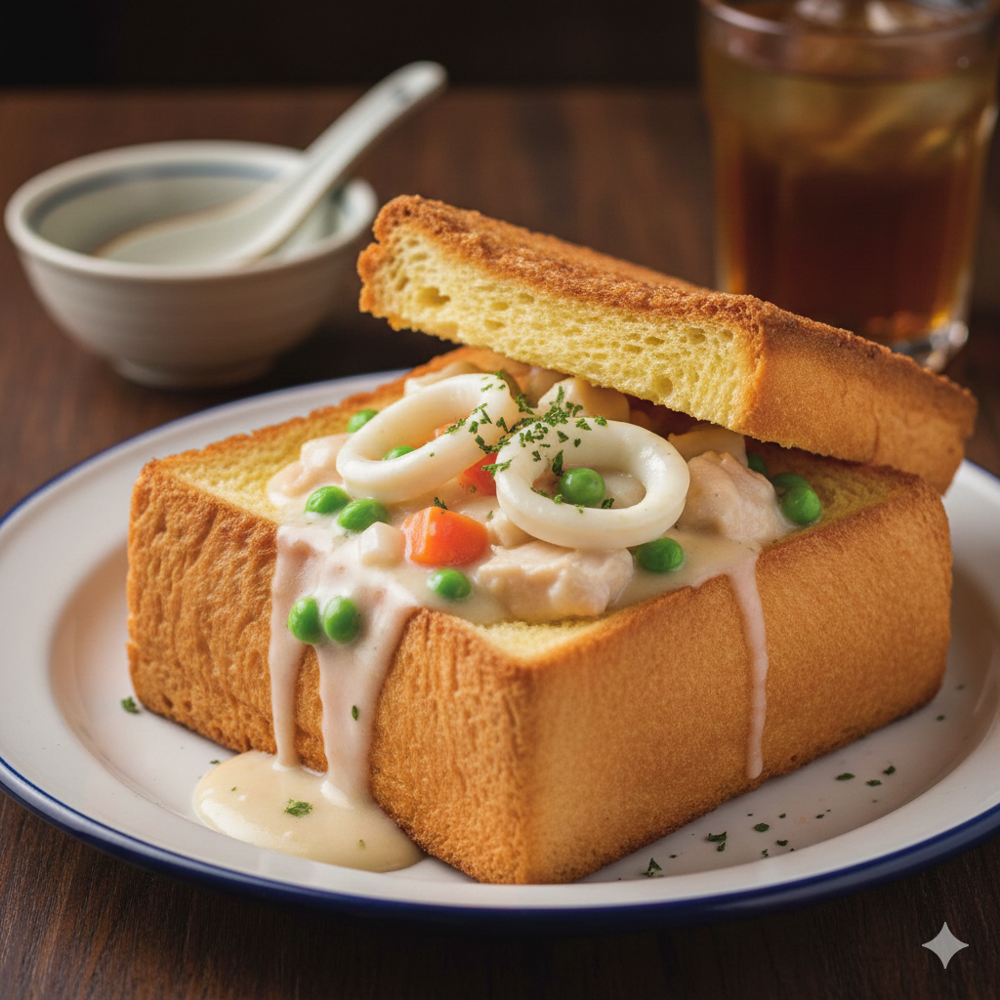
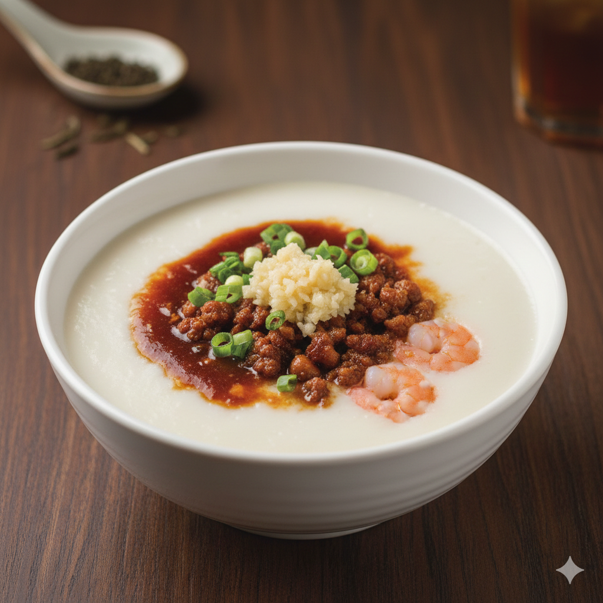
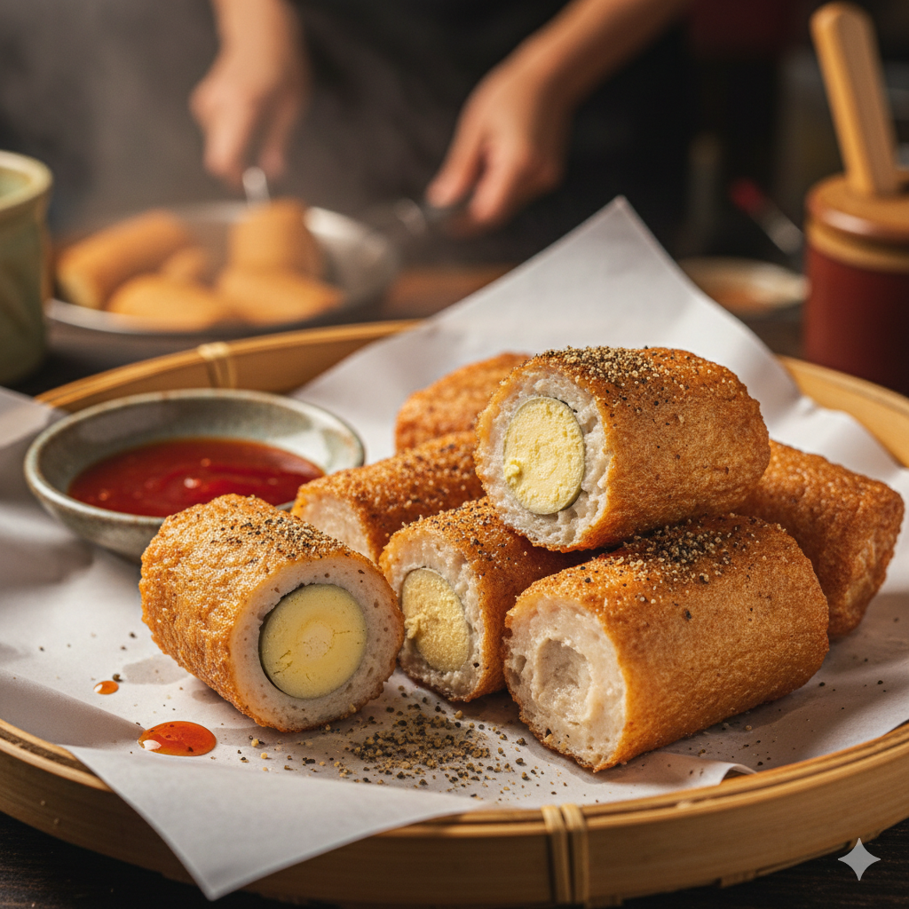
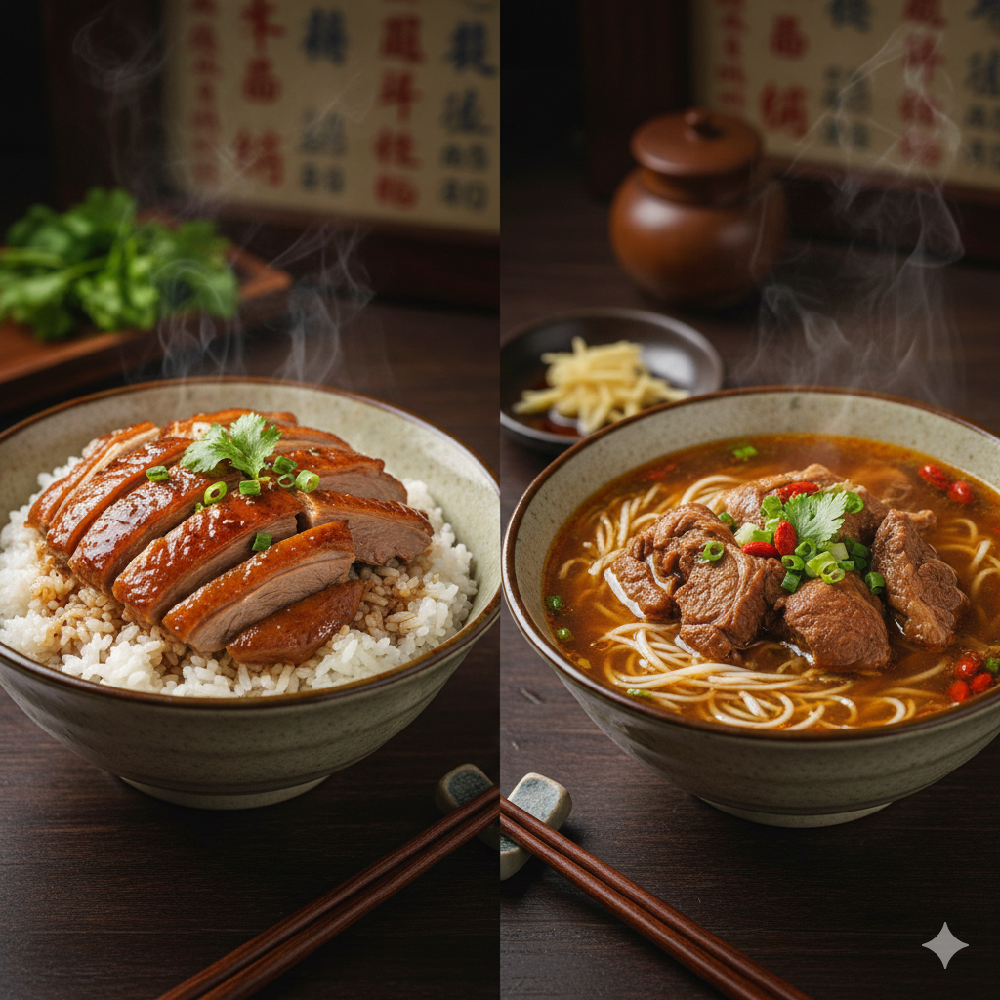
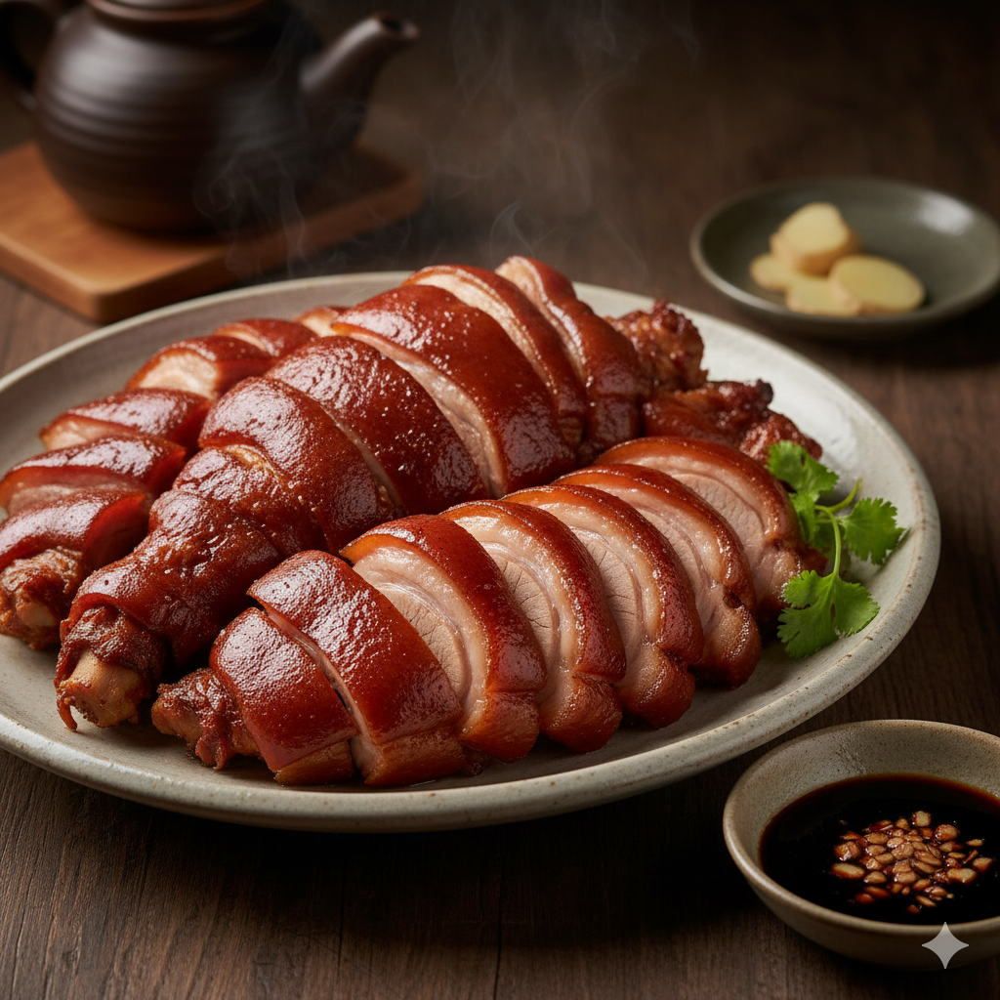

台南府城
棺材板 (Coffin Bread)
棺材板是台南最知名的創意小吃之一，起源於 1940 年代。它的名字雖然奇特，卻代表了台灣早期融合中西飲食文化的智慧。製作時選用厚片吐司炸至金黃酥脆，中間挖空後，填入以雞肝/雞肉、墨魚、豌豆、紅蘿蔔等和白醬調製的濃稠餡料。外皮酥脆，內層吸滿濃湯，口感豐富。

台南府城
碗粿 (Wa-Gui / Savory Rice Cake)
台南碗粿與中北部的純白碗粿不同，呈現濃郁的醬褐色。使用舊在來米磨成漿，確保蒸出來的粿體紮實且Q彈。製作時會將肉燥、香菇、蝦米、鹹蛋黃與豬肉片拌入米漿。食用時一定要淋上微甜的特製醬油膏與大量的蒜泥。台南人習慣用竹籤切塊食用。

高雄港都
旗魚黑輪 (Swordfish Tempura)
旗魚黑輪是高雄獨有的特色小吃，以新鮮旗魚漿為主料，質地細膩潔白。最大的特色在於內餡包入一小塊水煮蛋，在高溫油炸下外層酥脆，內餡滑嫩。在地吃法是搭配免費的黑輪湯，並灑上胡椒鹽或沾醬享用，是高雄夜市的人氣美食。

高雄港都
鴨肉飯與當歸鴨 (Duck Rice & Soup)
高雄鹽埕區的鴨肉飯以淋在白飯上的「鴨油肉燥」為精髓，鴨油清香，肉燥鹹甜。鴨肉多採低溫慢煮或煙燻，軟嫩多汁。搭配的當歸鴨湯頭選用多種中藥材熬煮數小時，湯色深黑卻清甜回甘，暖胃滋補。

屏東熱情
萬巒豬腳 (Wanluan Pork Knuckles)
萬巒豬腳是屏東的代表性美食，以「乾式、Q彈」著稱，不同於一般紅燒豬腳。使用十幾種中藥材滷製，控制火候使豬腳達到「皮Q、筋脆、肉嫩」的境界。通常切片後放涼或溫食，並搭配秘傳的蒜泥醬油膏，風味絕佳，富有膠質且不油膩。